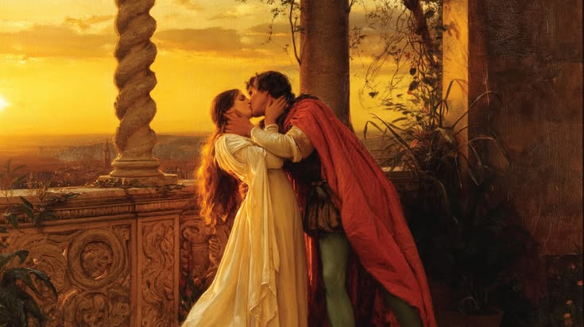

“Romeu e Julieta”, é uma das histórias de amor mais famosas do mundo. A trama acompanha dois jovens que se apaixonam, mesmo pertencendo a famílias rivais. Esse amor proibido leva a uma série de acontecimentos trágicos.
A obra destaca a força do amor, mas também mostra como o ódio entre famílias pode causar grandes perdas. Os personagens vivem emoções intensas e tomam decisões rápidas, o que contribui para o desfecho triste da história.
Por fim, “Romeu e Julieta” é uma história emocionante e impactante, que continua sendo atual mesmo após muitos anos. É uma leitura envolvente para quem gosta de romance e drama.